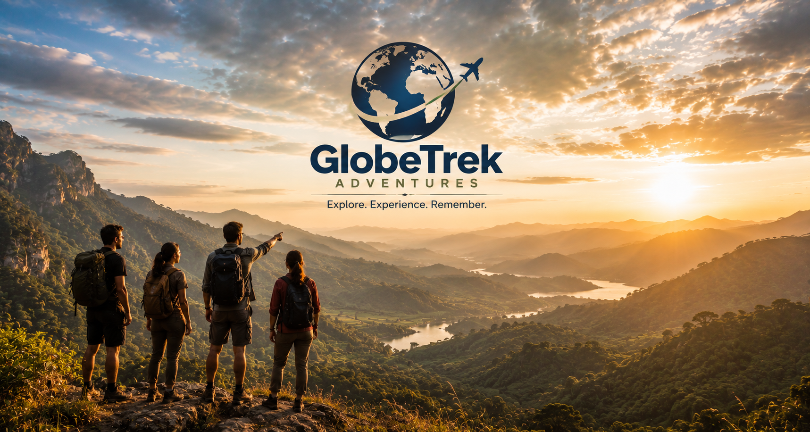

The GlobeTrek Story
A Passion for the Pearl
Founded on the principles of authenticity and adventure, GlobeTrek started with a simple belief: the most beautiful parts of Sri Lanka are the ones felt, not just seen.
From the misty highlands of Nuwara Eliya to the untouched shores of the East Coast, we've spent a decade curating experiences that go beyond the guidebooks.
We don't just book tours; we craft life-long memories through deep local connections and a commitment to showcasing the true spirit of our island.
- Founder of GlobeTrek
Amara Perera
CEO & Lead Explorer